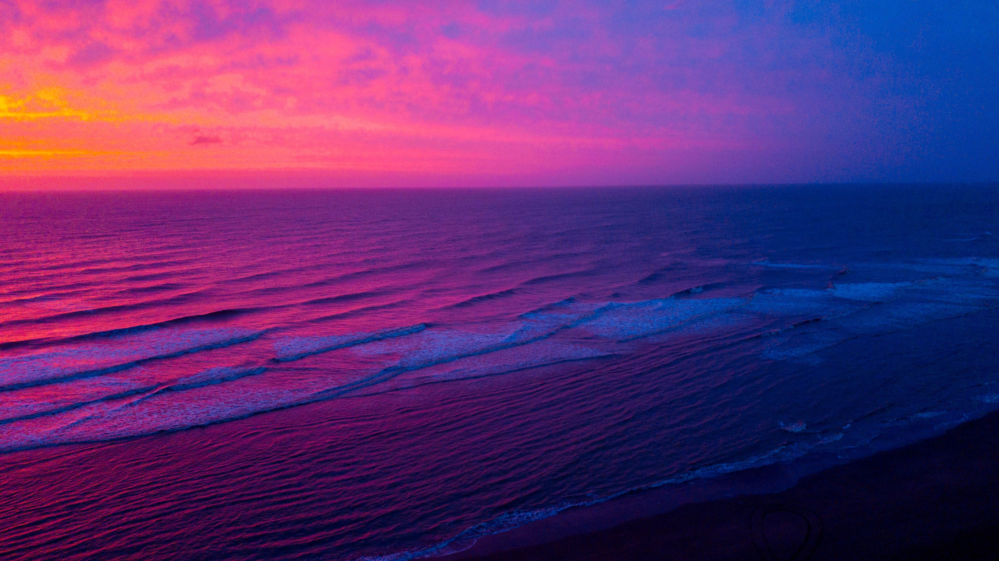

Sobre mi:
 Mi nombre es Francisco Peterson, vivo en Buenos Aires, Argentina. Actualmente trabajo en el Ejército Argentino como editor de video, camarógrafo, piloto de drone y fotógrafo. Los proyectos que realizo son difundidos por los canales oficiales del ejército (YouTube, Instagram, Facebook, Twitter) y por la TV Pública los dias sabado por la mañana. Además estoy haciendo una carrera de Programación Fullstack y de Marketig Digital. En este sitio busco compartir algunos de mis videos, fotos y trabajos favoritos que realicé en los ultimos años.